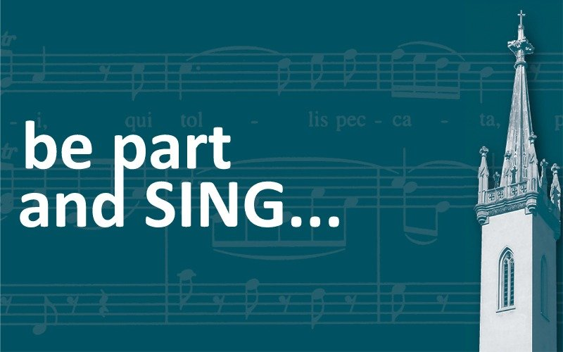
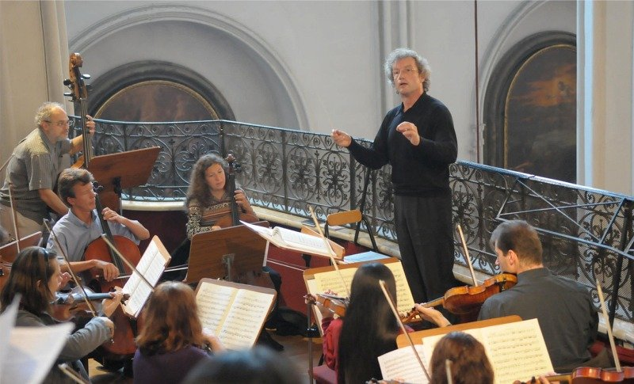
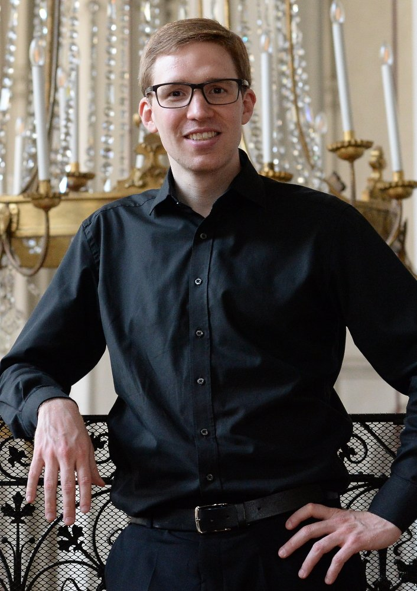
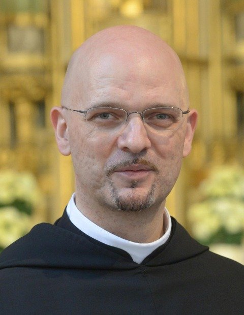
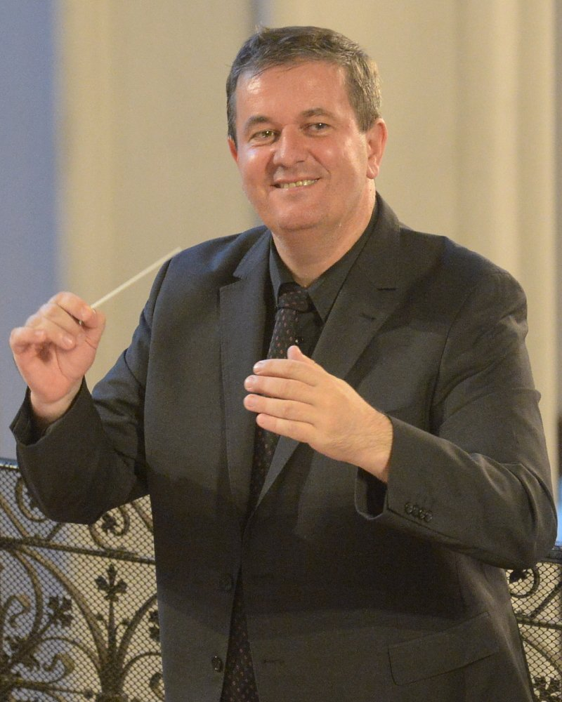
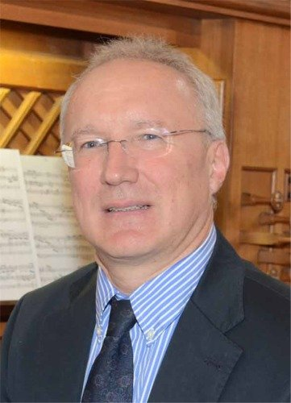
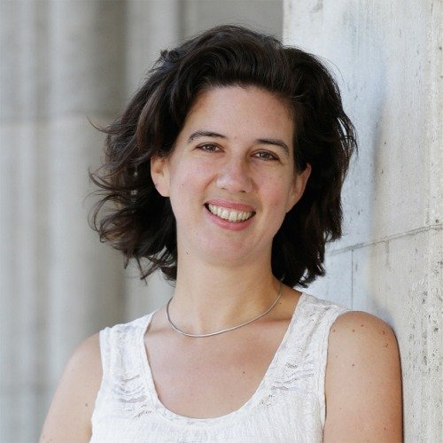
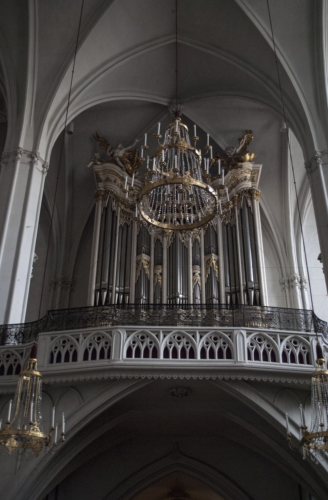
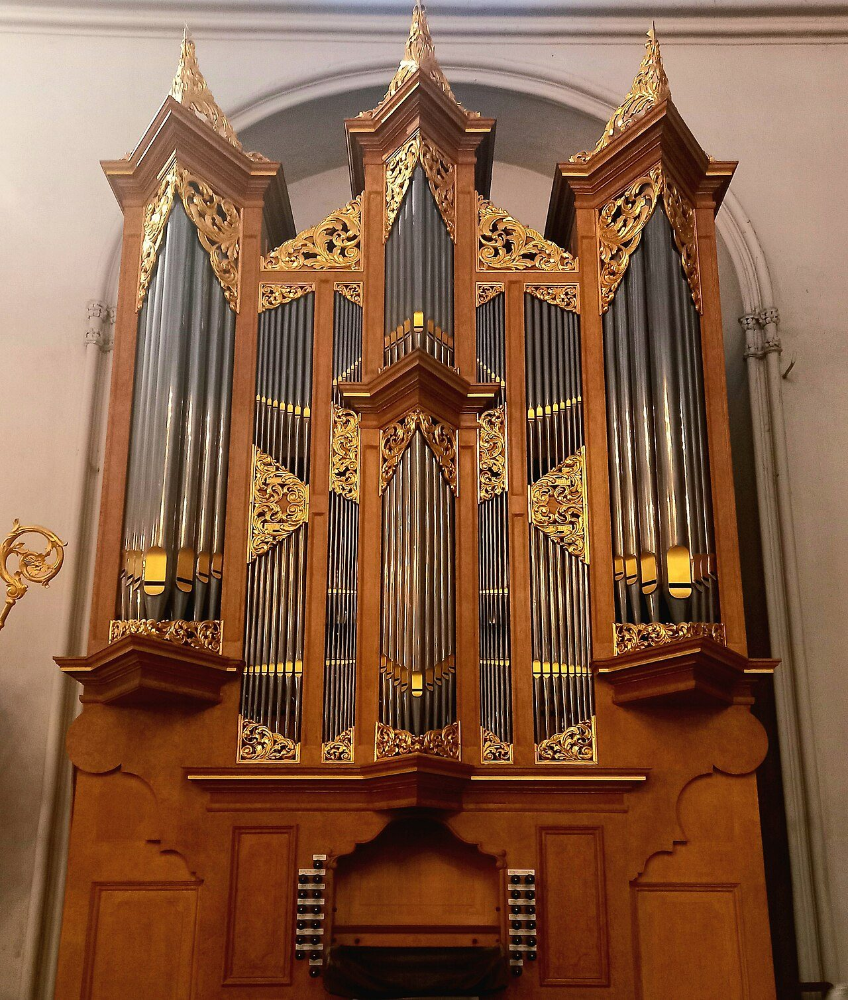

hochamt.augustiner.at
Kirchenmusik
in St. Augustin
Jeden Sonntag Hochamt mit vollem Chor, Orchester und Solisten. Musik als Form des Gebets — eine Tradition, die auf die Wiener Hofkapelle der Habsburger zurückgeht.
Hochämter in St. Augustin
Werke von Mozart, Haydn, Schubert, Beethoven und anderen großen Komponisten machen das Hochamt zu einem unvergesslichen Klangerlebnis.
Vergangene Hochämter
Eine Übersicht der bereits gefeierten Hochämter vergangener Sonntage und Feste.
Chor von St. Augustin
Der Chor von St. Augustin besteht aus engagierten Sängerinnen und Sängern und begleitet die wöchentlichen Hochämter sowie besondere Konzerte des Kirchenjahres.
Kammerchor von St. Augustin

Der Kammerchor widmet sich kammermusikalischen Programmen und a-cappella-Werken bei besonderen Anlässen des Kirchenjahres.
Solisten von St. Augustin
Renommierte Sängerinnen und Sänger, die regelmäßig die Hochämter und Konzerte von St. Augustin mitgestalten.
Orchester von St. Augustin

Professionelle Musikerinnen und Musiker, spezialisiert auf Wiener Klassik und Frühromantik, tragen die Hochämter instrumental.
Leitung der Kirchenmusik

Peter Tiefengraber wurde 1991 geboren und wuchs in Pinkafeld (Burgenland) auf. Nach Unterricht bei seinem Onkel (Klavier) und an der örtlichen Musikschule (Orgel) war er ab 2005 an der Kunstuniversität Graz, Institut Oberschützen, als außerordentlicher Student immatrikuliert. Am Joseph-Haydn-Konservatorium Eisenstadt studierte er ab 2010 Orgel und Instrumentalpädagogik bei Ulrike Theresia Wegele. Ab 2011 folgten ein Musiktheoriestudium (bei Gesine Schröder) und später die Fortsetzung des Orgelstudiums (bei Pier Damiano Peretti; Diplomprüfung 2017 mit Auszeichnung) an der Universität für Musik und darstellende Kunst Wien. Seit 2017 studiert er katholische Kirchenmusik. Künstlerisch inspirierend waren Orgel-Meisterkurse bei Michael Radulescu, Ludger Lohmann, Jon Laukvik, Jürgen Essl, Luigi Ferdinando Tagliavini, Jean-Claude Zehnder und Michel Bouvard.
Er ist sowohl als Organist als auch als Musiktheoretiker im In- und Ausland gefragt und veröffentlichte musiktheoretische Beiträge, unter anderem zu Johann Nepomuk Davids Gottesminneliedern und zu Anton Bruckners metrischen Ziffern. Konzertant trat er bereits in Deutschland, Frankreich, Österreich und Schottland sowie bei Fernseh- und Rundfunkmessen auf.
Seit 2015 war er regelmäßig als Gastorganist an der Wiener Augustinerkirche und im Eisenstädter Dom zu hören. Mit dem Chor der Stadtpfarre Pinkafeld führt er jährlich große Orchestermessen von Mozart und Haydn auf. Mit September 2021 übernahm er als Kirchenmusikdirektor die Gesamtleitung der Kirchenmusik von St. Augustin.

Als Pfarrer von St. Augustin trägt P. Mag. Matthias Schlögl OSA die geistliche Verantwortung für die liturgische Einbettung der Kirchenmusik in den Gottesdienst. Mehr zu seiner Person unter Die Augustiner in Wien.
Gastdirigenten von St. Augustin
Neben dem Kirchenmusikdirektor gestalten erfahrene Gastdirigenten regelmäßig die Hochämter von St. Augustin mit.

Thomas Böttcher gestaltet als Gastdirigent regelmäßig Hochämter von St. Augustin mit.
Gottfried Fragner gestaltet als Gastdirigent regelmäßig Hochämter von St. Augustin mit.
Michael Schneider gestaltet als Gastdirigent regelmäßig Hochämter von St. Augustin mit.
Organisten von St. Augustin

Wolfgang Capek ist Titularorganist von St. Augustin und betreut die große Rieger-Orgel der Augustinerkirche.
Robert Kovács ist Titularorganist von St. Augustin und betreut die Reil-Orgel im Chor der Augustinerkirche.

Elke Eckerstorfer gehört zum Organistenteam von St. Augustin und begleitet Hochämter und Werktagsmessen.
Ines Schüttengruber gehört zum Organistenteam von St. Augustin und begleitet Hochämter und Werktagsmessen.
Orgeln in St. Augustin


Patenschaft St. Augustin
Die Patenschaft St. Augustin ermöglicht persönliches Engagement für die Kirchenmusik und sichert ihre Zukunft.
Spenden für die Kirchenmusik von St. Augustin sind per Banküberweisung möglich:
Kontoinhaber: Patenschaft St. Augustin
Bank: Bankhaus Schelhammer & Schattera
IBAN: AT84 1919 0005 0015 5239 · BIC: BSSWATWW
Ebenso werden Spenden in der Pfarrkanzlei oder am Ende des Hochamtes entgegengenommen. Auskunft: patenschaft@hochamt.at
Zu den langjährigen Förderern zählen unter anderem das Bankhaus Schelhammer & Schattera, das Augustiner-Vikariat Wien, Casinos Austria, die Österreichischen Lotterien, die Wiener Städtische, das Hotel Sacher sowie zahlreiche Einzelpersonen aus Kultur, Wirtschaft und Kirche. Die Kirchenmusik von St. Augustin dankt allen Paten für ihre freundliche Unterstützung.
Sponsor (ab € 35 / Jahr): Ermäßigung bei Konzerten.
Teilpate (ab € 300): finanziert die Teilkosten eines Hochamtes, erhält Urkunde und Nennung auf der Website.
Vollpate: trägt die vollen Kosten eines Hochamtes, erhält eine handgefertigte Urkunde und eine jährliche Einladung.
Gründer: verpflichtet sich zu mindestens fünf Jahren jährlicher Förderung und erhält eine Urkunde aus dem Klosterskriptorium.
CDs von St. Augustin
Die Kirchenmusik von St. Augustin ist auch auf Tonträgern dokumentiert, erhältlich über die Pfarrkanzlei.
Wer singt, betet doppelt.